Assignments
Assignment 1
Problem 1
Install the datasets package on the console below. Now load the library. Answer: I’ve loaded the library!
Load the USArrests dataset and rename it dat. Note that this dataset comes with R, in the package datasets, so there’s no need to load data from your computer. Why is it useful to rename the dataset?
Answer: Well, we want to replicate analyses. That’s why it’s nice to rename data.
dat <- USArrestsProblem 2
Use this command to make the state names into a new variable called State.
dat$state <- tolower(rownames(USArrests))This dataset has the state names as row names, so we just want to make them into a new variable. We also make them all lower case, because that will help us draw a map later - the map function requires the states to be lower case.
List the variables contained in the dataset USArrests.
names(dat)## [1] "Murder" "Assault" "UrbanPop" "Rape" "state"The four variables are Murder, Assault, UrbanPop, and Rape.
Problem 3
What type of variable (from the DVB chapter) is Murder?
Answer: quantitative variable
What R Type of variable is it?
Answer: double
Problem 4
What information is contained in this dataset, in general? What do the numbers mean?
Answer: The rate of crimes per state.
Problem 5
Draw a histogram of Murder with proper labels and title.
hist(dat$Murder)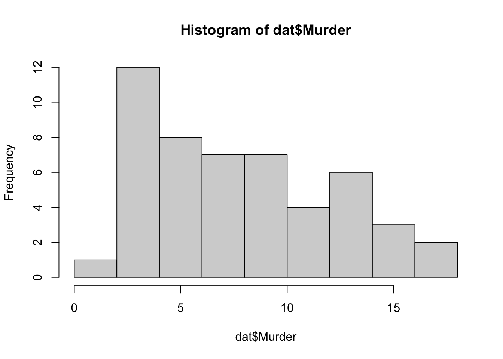
Problem 6
Please summarize Murder quantitatively. What are its mean and median? What is the difference between mean and median? What is a quartile, and why do you think R gives you the 1st Qu. and 3rd Qu.?
summary(dat$Murder)## Min. 1st Qu. Median Mean 3rd Qu. Max.
## 0.800 4.075 7.250 7.788 11.250 17.400Problem 7
Repeat the same steps you followed for Murder, for the variables Assault and Rape. Now plot all three histograms together. You can do this by using the command par(mfrow=c(3,1)) and then plotting each of the three.
hist(dat$Assault)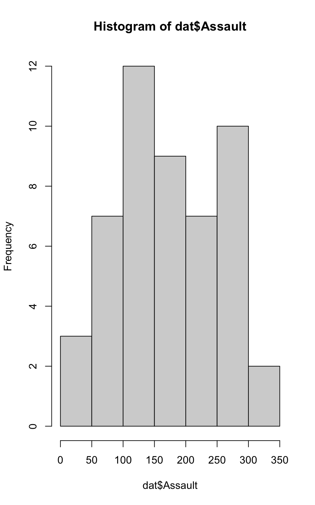
hist(dat$Rape)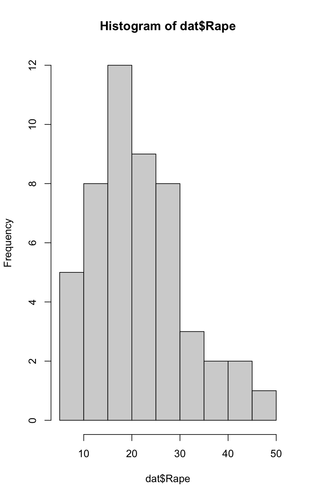
par(mfrow=c(3,1))
hist(dat$Murder)
hist(dat$Assault)
hist(dat$Rape)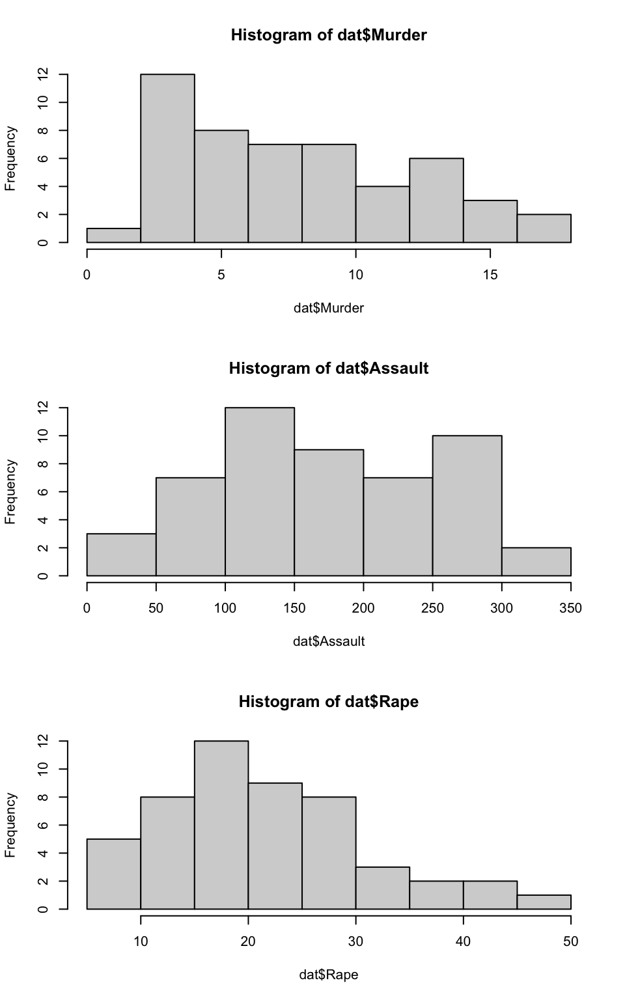
What does the command par do, in your own words (you can look this up by asking R ?par)?
Answer:
What can you learn from plotting the histograms together?
Answer:By plotting the histograms together you can compare and contrast the data within the same parameters.
Problem 8
In the console below (not in text), type install.packages(“maps”) and press Enter, and then type install.packages(“ggplot2”) and press Enter. This will install the packages so you can load the libraries.
Run this code:
library('maps')
library('ggplot2')
ggplot(dat, aes(map_id=state, fill=Murder)) +
geom_map(map=map_data("state")) +
expand_limits(x=map_data("state")$long, y=map_data("state")$lat)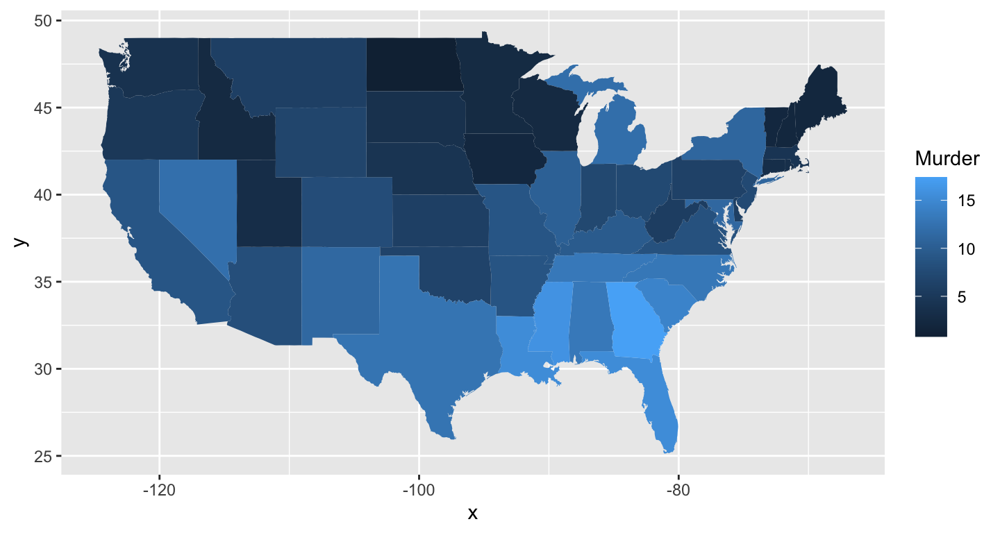
Assignment 2
Problem 1: Load data
Set your working directory to the folder where you downloaded the data.
# setwd("~/Documents/GitHub/annsophia1020/AnnaSophiaLotman_LabJournalWebsite")
dat <- read.csv("dat.nsduh.small.1.csv")What are the dimensions of the dataset?
Dimensions are 171x7
names(dat)## [1] "mjage" "cigage" "iralcage" "age2" "sexatract" "speakengl"
## [7] "irsex"dim(dat)## [1] 171 7Problem 2: Variables
variable.names(dat)## [1] "mjage" "cigage" "iralcage" "age2" "sexatract" "speakengl"
## [7] "irsex"# Describe the variables in the dataset.
# "mjage" "cigage" "iralcage" "age2" "sexatract" "speakengl" "irsex"
# What is this dataset about? Who collected the data, what kind of sample is it, and what was the purpose of generating the data?
# The dataset is about the correlation between illicit drugs and alcohol and tobacco use and mental health in the USA.
# The sample was collected by the NSDUH
# It is a state level small area estimate sample
# The purpose of generating the data was to spot a correlation and trend to better respond to the issues of both drug use and mental illness. Problem 3: Age and gender
hist(dat$age2)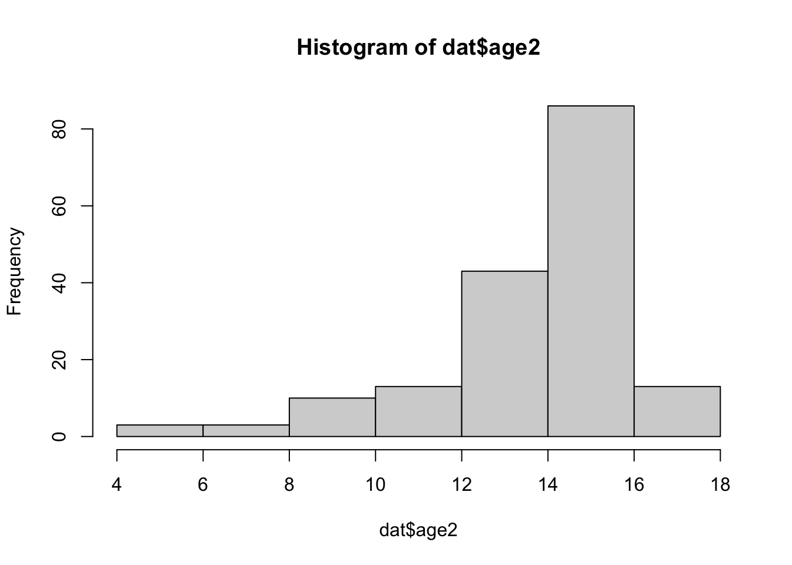
# What is the age distribution of the sample like? Make sure you read the codebook to know what the variable values mean.
# Sampled those 12 and under.
#The age distribution isn't as level as It should be it weighs more between the ages categories of 12 and 16. But this does seem to caputure the majority of the ages that would be using.
# Do you think this age distribution representative of the US population? Why or why not?
# I think it's a good representation although with any self reporting study, especially one with such a personal variable I think it's possible that even the reporting of one's age could be disrupted.
# Is the sample balanced in terms of gender? If not, are there more females or males?
# If I am reading the table correctly it looks as though there are more males than females being surveyed. But overall yes it is very balanced.
# Use this code to draw a stacked bar plot to view the relationship between sex and age. What can you conclude from this plot?tab.agesex <- table(dat$irsex, dat$age2)
barplot(tab.agesex,
main = "Stacked barchart",
xlab = "Age category", ylab = "Frequency",
legend.text = rownames(tab.agesex),
beside = FALSE) # Stacked bars (default)
#You can clearly see the correlation between age and sex.Problem 4: Substance use
# For which of the three substances included in the dataset (marijuana, alcohol, and cigarettes) do individuals tend to use the substance earlier?
#Cigarettes
hist(dat$mjage)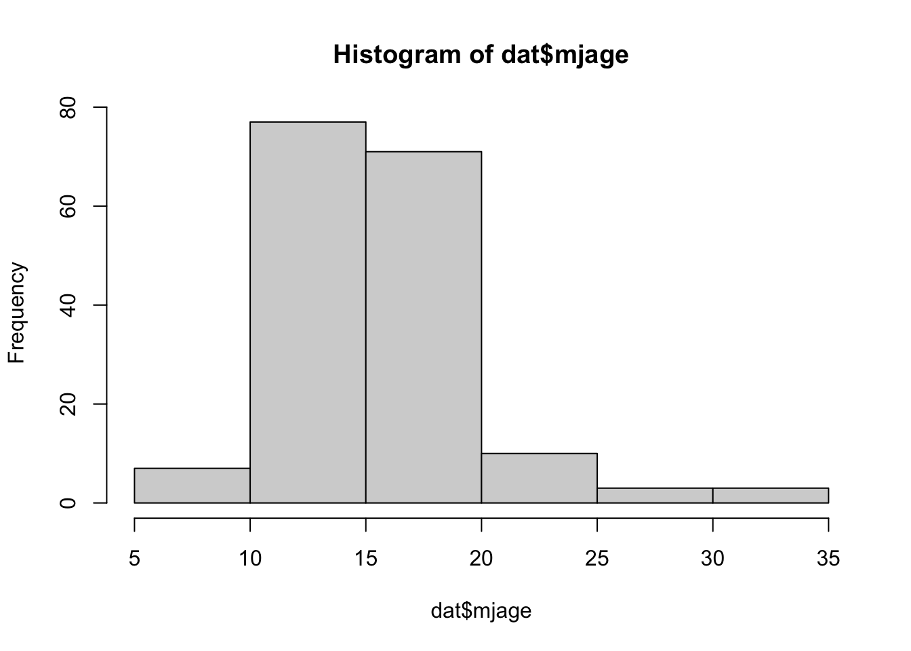
hist(dat$cigage)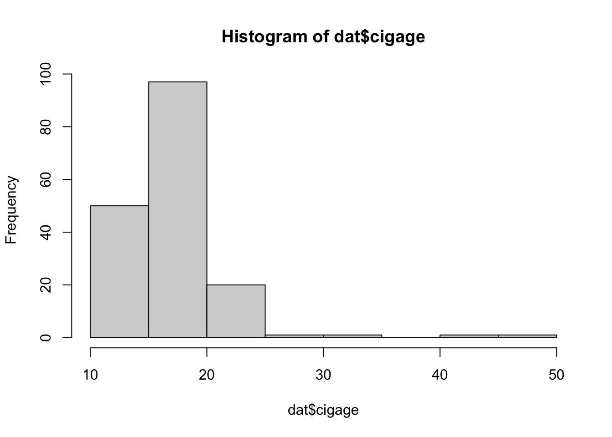
Problem 5: Sexual attraction
hist(dat$irsex)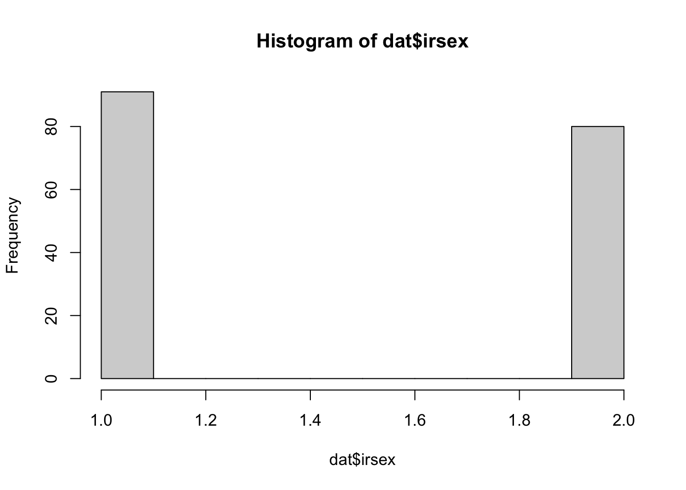
hist(dat$sexatract)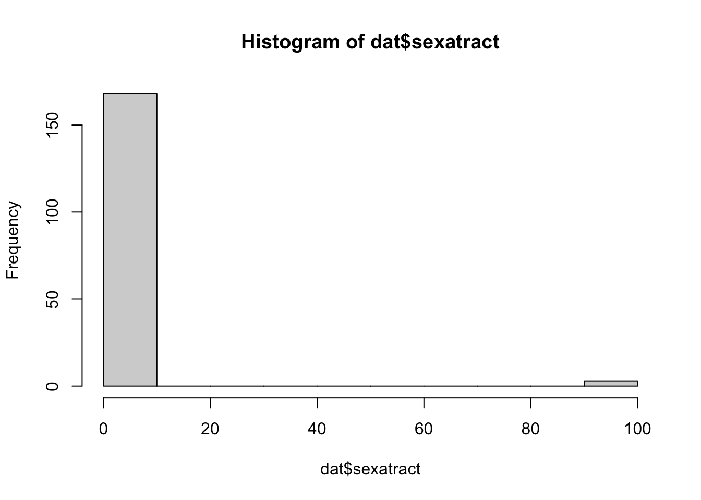
# What does the distribution of sexual attraction look like? Is this what you expected?
#The distribution of sexual attraction seemed to be very skewed. There is a much higher report of heterosexual attraction on average than there is in the US.
#I do, however, understand how subjects would refuse to answer such a personal question especially if they felt their answer could produced some sort of bias's towards their sexual prefrence.
# What is the distribution of sexual attraction by gender?
#It's a pretty good distribution it's almost level. It seems as though there is just a small margin of difference. Problem 6: English speaking
hist(dat$speakengl)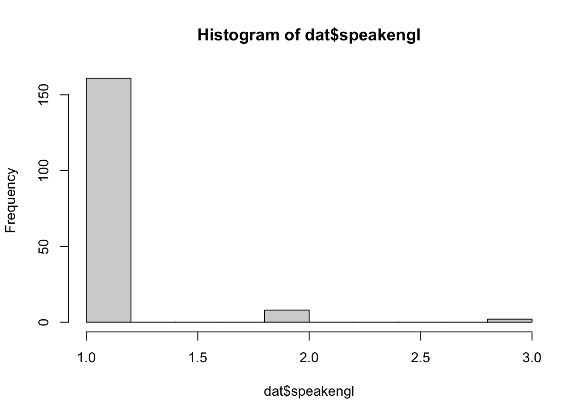
# What does the distribution of English speaking look like in the sample? Is this what you might expect for a random sample of the US population?
#Yes this is what I would expect for a random US Sample population. The distribution is almost all the way skewed towards the "very well" category and only a small margin fell right before the "well" category and as expected an even smaller margin reported they did not speak english.
# Are there more English speaker females or males?
#The stacked barchart shows there are more English speaking males than females.tab.agespeakengl <- table(dat$speakengl, dat$age2)tab.speakenglsex <- table(dat$irsex, dat$speakengl)
barplot(tab.speakenglsex,
main = "Stacked barchart",
xlab = "Sex category", ylab = "Frequency",
legend.text = rownames(tab.speakenglsex),
beside = FALSE) # Stacked bars (default)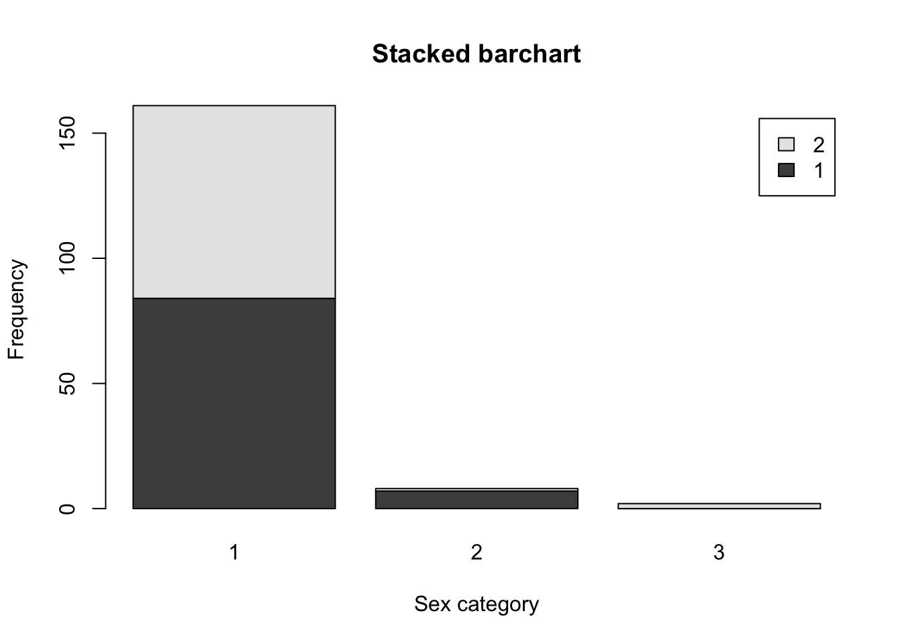
Exam 1
Problem 1 (10 points)
- Describe the dataset. This is the source: https://github.com/washingtonpost/data-police-shootings . Write two sentences (max.) about this.
__The Washing Post Dataset contains detailed records of every known fatal shooting by a a police officer while he was on the clock. The Dataset has also noted specific details about the deceased such as gender, age, race, the circumstance of the shooting and whether or not the person was experiencing a mental health crisis.
dat <- read.csv("fatal-police-shootings-data.csv")- How many observations are there in the data frame?
There are 6594 observations in the date frame.
- Look at the names of the variables in the data frame. Describe what “body_camera”, “flee”, and “armed” represent, according to the codebook. Again, only write one sentence (max) per variable.
“body-camera” refers to if the officer was wearing a body camera because it may have recorded some portion of the incident. “flee” refers to when the vicitm was moving away from the officers. “armed” indicates that the victim was armed with something that the police officer believed could inflict harm.
- What are three weapons that you are surprised to find in the “armed” variable? Make a table of the values in “armed” to see the options.
table(dat$armed)##
## air conditioner
## 207 1
## air pistol Airsoft pistol
## 1 3
## ax barstool
## 24 1
## baseball bat baseball bat and bottle
## 20 1
## baseball bat and fireplace poker baseball bat and knife
## 1 1
## baton BB gun
## 6 15
## BB gun and vehicle bean-bag gun
## 1 1
## beer bottle binoculars
## 3 1
## blunt object bottle
## 5 1
## bow and arrow box cutter
## 1 13
## brick car, knife and mace
## 2 1
## carjack chain
## 1 3
## chain saw chainsaw
## 2 1
## chair claimed to be armed
## 4 1
## contractor's level cordless drill
## 1 1
## crossbow crowbar
## 9 5
## fireworks flagpole
## 1 1
## flashlight garden tool
## 2 2
## glass shard grenade
## 4 1
## gun gun and car
## 3798 12
## gun and knife gun and machete
## 22 3
## gun and sword gun and vehicle
## 1 17
## guns and explosives hammer
## 3 18
## hand torch hatchet
## 1 14
## hatchet and gun ice pick
## 2 1
## incendiary device knife
## 2 955
## knife and vehicle lawn mower blade
## 1 2
## machete machete and gun
## 51 1
## meat cleaver metal hand tool
## 6 2
## metal object metal pipe
## 5 16
## metal pole metal rake
## 4 1
## metal stick microphone
## 3 1
## motorcycle nail gun
## 1 1
## oar pellet gun
## 1 3
## pen pepper spray
## 1 2
## pick-axe piece of wood
## 4 7
## pipe pitchfork
## 7 2
## pole pole and knife
## 3 2
## railroad spikes rock
## 1 7
## samurai sword scissors
## 4 9
## screwdriver sharp object
## 16 14
## shovel spear
## 7 2
## stapler straight edge razor
## 1 5
## sword Taser
## 23 34
## tire iron toy weapon
## 4 226
## unarmed undetermined
## 421 188
## unknown weapon vehicle
## 82 213
## vehicle and gun vehicle and machete
## 8 1
## walking stick wasp spray
## 1 1
## wrench
## 1I was surprised to “binoculars” “pen” “air conditioner”.
Problem 2 (10 points)
- Describe the age distribution of the sample. Is this what you would expect to see?
table(dat$age)##
## 6 12 13 14 15 16 17 18 19 20 21 22 23 24 25 26 27 28 29 30
## 2 1 2 3 16 35 56 109 98 105 124 138 148 179 216 188 217 194 204 204
## 31 32 33 34 35 36 37 38 39 40 41 42 43 44 45 46 47 48 49 50
## 223 207 205 209 196 186 183 164 165 140 142 112 120 101 126 109 115 110 103 95
## 51 52 53 54 55 56 57 58 59 60 61 62 63 64 65 66 67 68 69 70
## 89 82 78 71 67 72 58 56 66 47 44 45 35 25 28 19 23 16 17 16
## 71 72 73 74 75 76 77 78 79 80 81 82 83 84 86 88 89 91
## 12 7 7 6 5 12 5 1 4 5 3 2 3 4 2 1 1 2The age distribution is about what I expected, of course the younger ages were concerning but not suprising.
- To understand the center of the age distribution, would you use a mean or a median, and why? Find the one you picked.
To find the center or age distribution I would use the meean. Even if we lined up all the varibles in order and used the median distribution we wouldn’t really see the the middle of distrubtion because there are so many duplicate values. The mean would record a more accurate display of the center of distrubtion.
- Describe the gender distribution of the sample. Do you find this surprising?
table(dat$gender)##
## F M
## 3 293 6298#The gender distrubtion isn't equal which makes sense. It's recording far more male victims than female victimes, I am not suprised by this.Your answer here.
Problem 3 (10 points)
- How many police officers had a body camera, according to news reports? What proportion is this of all the incidents in the data? Are you surprised that it is so high or low?
table(dat$body_camera)##
## False True
## 5684 910#I not suprised by this report. Only 910 police officers had a body camera. In terms of these recordings, this is only a little bit more than a sixth of the incidents recorded. Your answer here.
- In how many of the incidents was the victim fleeing? What proportion is this of the total number of incidents in the data? Is this what you would expect?
table(dat$flee)##
## Car Foot Not fleeing Other
## 491 1058 845 3952 248#About 2394 of the incidents included incidents of victim fleeing. This is about less than half of the total incidents. I would expect the rate to be higher, or for the reports, by the officers, of the fleeing to be higher. Your answer here.
Problem 4 (10 points) - Answer only one of these (a or b).
- Describe the relationship between the variables “body camera” and “flee” using a stacked barplot. What can you conclude from this relationship?
Hint 1: The categories along the x-axis are the options for “flee”, each bar contains information about whether the police officer had a body camera (vertically), and the height along the y-axis shows the frequency of that category).
Hint 2: Also, if you are unsure about the syntax for barplot, run ?barplot in R and see some examples at the bottom of the documentation. This is usually a good way to look up the syntax of R code. You can also Google it.
?barplot
counts <- table(dat$body_camera, dat$flee)
barplot(counts, col=c("red", "blue"), legend=TRUE)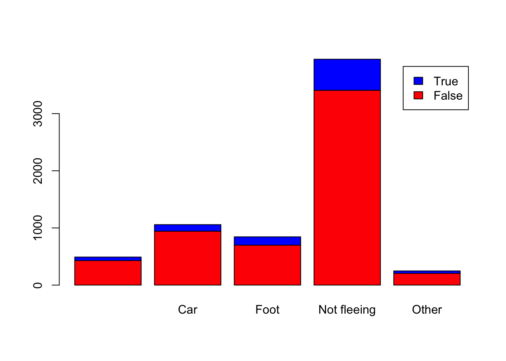
#The relationship between the use of body cameras and the product the victims fleeing implies some sort of quantitative corrleation but not a dinifitive casuation. Just because a police officer has a camera means the victim will flee. Your answer here.
- Describe the relationship between age and race by using a boxplot. What can you conclude from this relationship?
Hint 1: The categories along the x-axis are the race categories and the height along the y-axis is age.
Hint 2: Also, if you are unsure about the syntax for boxplot, run ?boxplot in R and see some examples at the bottom of the documentation. This is usually a good way to look up the syntax of R code. You can also Google it.
plot(factor(dat$race), dat$number.of.convictions, ylab="Convictions", xlab="Race", names=c("A. Indian","Asian","Black","Native Hawaii","White"))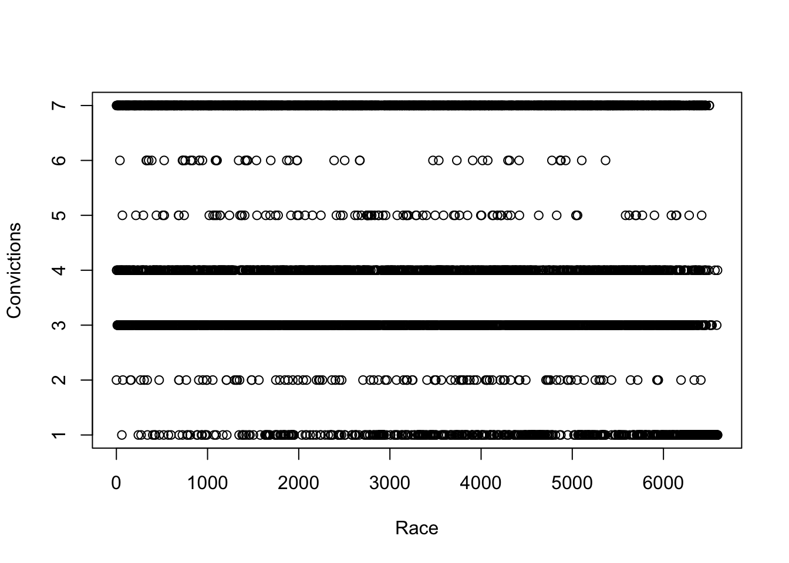
Your answer here.
Extra credit (10 points)
- What does this code tell us?
mydates <- as.Date(dat$date)
head(mydates)
(mydates[length(mydates)] - mydates[1])On Friday, a new report was published that was described as follows by The Guardian: “More than half of US police killings are mislabelled or not reported, study finds.” Without reading this article now (due to limited time), why do you think police killings might be mislabelled or underreported?
Regarding missing values in problem 4, do you see any? If so, do you think that’s all that’s missing from the data?